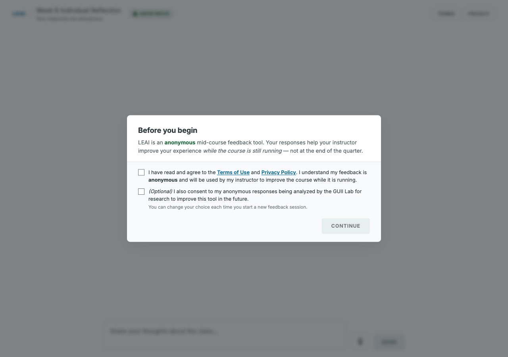
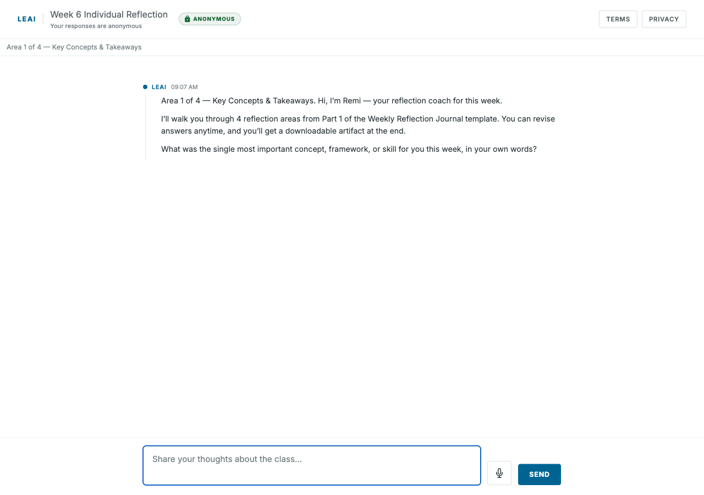
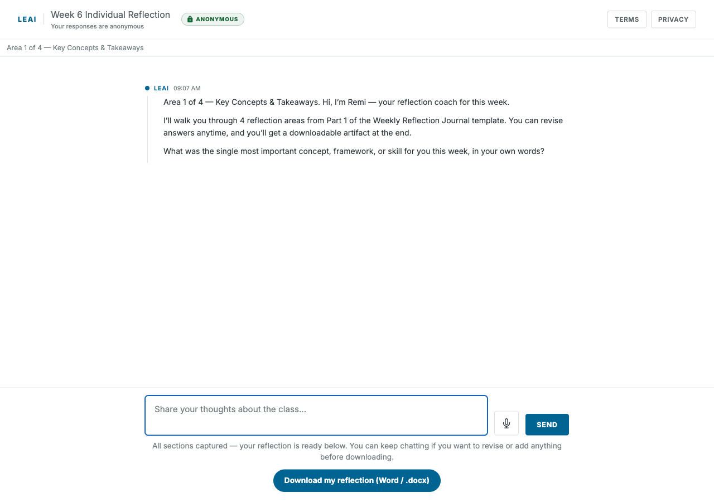
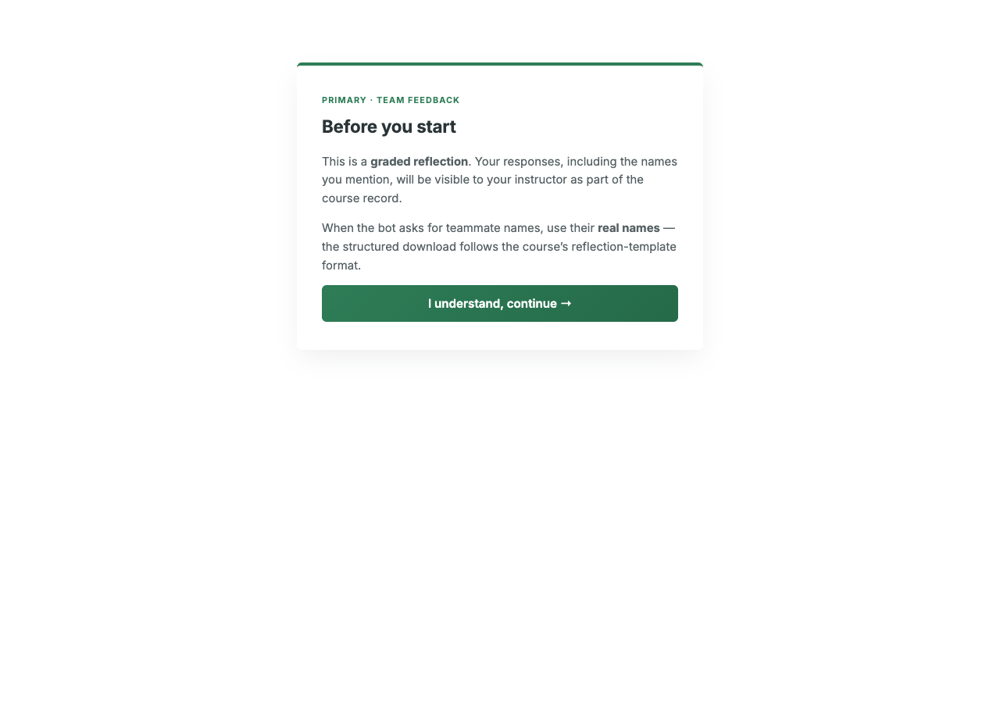
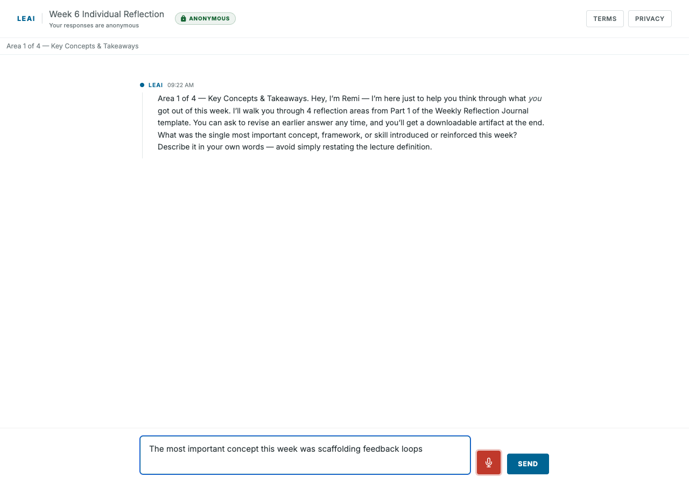

LEAI · Student Documentation
LEAI Student Guide
How to complete your reflection in LEAI and submit it on Canvas — for both individual and group assignments.
Contents
What is LEAI?
LEAI is a chat-based reflection tool. Instead of filling in a static form, you have a short conversation with a reflection coach (the chatbot). It asks one section at a time, follows up if anything is unclear, and at the end builds a Word document (.docx) of your answers that you upload to Canvas as your submission.
You do not need to log in. Just open the link your instructor gave you on any device — phone, tablet, or laptop.
Which mode am I doing?
Your instructor will give you one of two links. They look similar but behave differently.
Anonymous individual reflection
Your responses are anonymous. There is a consent screen up front, then you chat through your reflection sections. Used for personal weekly reflections, mid-course feedback, etc.
Identified team reflection
This is a graded reflection. Your responses — and the teammate names you mention — are visible to your instructor. You'll be asked to pick which team you are on before the chat starts.
Individual Reflection
Use this flow if your instructor gave you the individual link. The whole thing usually takes 5–10 minutes.
It will look like https://guii-lab.github.io/LEAI/feedback.html?id=…. You can use any browser on any device.
On the Before you begin screen, check the required box (the second optional research box is up to you), then click Continue. The button stays grey until the required box is checked.

The chatbot will walk you through the reflection one section at a time. Type your answer in the box at the bottom — or tap the microphone icon to dictate it instead — and click Send. The bot may ask a quick follow-up before moving to the next section. The progress strip at the top (e.g. "Area 1 of 4") shows how far along you are.

When you've covered every section, the bot will tell you the reflection is complete and a Download my reflection (Word / .docx) button appears under the chat box. Click it, save the file to your computer, then upload that .docx to your Canvas assignment to submit.

.docx.You can keep chatting after the Download button appears — anything you add still flows into the file. Just click the Download button again before uploading to Canvas to grab the latest version.
Group Reflection
Use this flow if your instructor gave you the group/team link. This is a graded reflection — your name and your teammates' names will be visible to your instructor.
It will look like https://guii-lab.github.io/LEAI/feedback.html?id=…. The page will open with a green-bordered "Before you start" card.
The first card explains that this is a graded reflection and that the names you mention will be visible to your instructor. Click I understand, continue →.

On the next screen, open the Pick your team dropdown and select your team number, then click Continue. If your team isn't listed, click "I don't see my team" and let your instructor know.


The chatbot will walk you through the reflection one section at a time. Type your answer in the box at the bottom — or tap the microphone icon to dictate it — and click Send. When the bot asks for teammate names, use their real names — the structured download follows your course's reflection-template format and the names go into the file.
When you've covered every section, a Download my reflection (Word / .docx) button appears under the chat box. Click it, save the file, and upload that .docx to your Canvas assignment to submit.
In group mode your responses are not anonymous. Your instructor will see your team number, your name, and the teammate names you mention. Keep your feedback constructive.
Tips & Tricks
Use the microphone if typing is slow
The microphone icon next to the Send button uses your browser's voice recognition — it dictates straight into the input box. Works best in Chrome and Edge. Click it once to start, click again to stop. Review the text before sending.

You can take your time
There is no time limit and no autosave gap. You can leave the tab open while you think, switch back to it later in the same session, and the conversation will still be there.
Lost the file? Re-download
If you accidentally close the tab before uploading, just open the link again — but note that your previous chat won't carry over, so you'll need to redo the reflection. Always click the download button and confirm the file is saved before closing the tab.
Open the file before submitting
Open the .docx in Word, Google Docs, or Pages once before uploading to Canvas. That way you confirm it actually contains your answers.
Common Questions
.docx that LEAI generated for you.Questions or stuck? Email your instructor — they can see whether your submission came through.